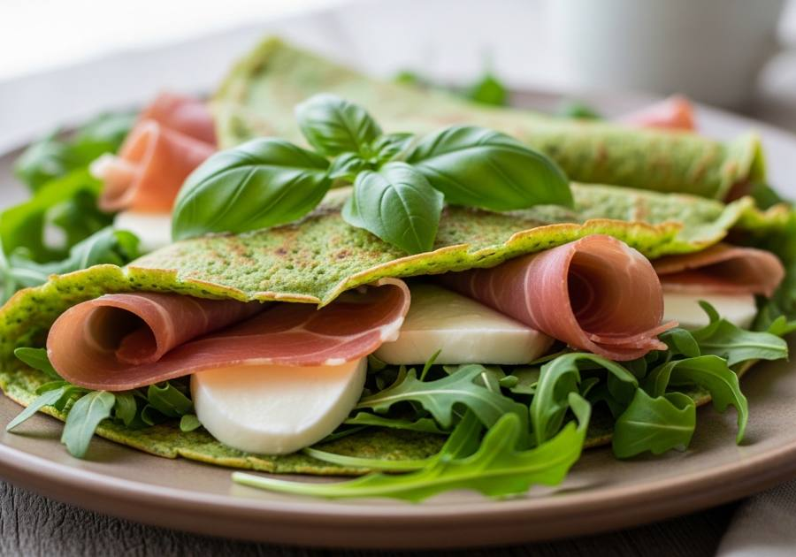

← Alle recepten

🍽 2 porties (4 pannenkoeken)
⏱ Voorbereiding: 10 min
🔥 Bereiding: 15 min
Σ Totaal: 25 min
Ingrediënten
- 1 grote mok (ca. 250 g) bloem
- 1 grote mok (ca. 250 ml) melk
- 1 ei
- 1 snufje zout
- 1 el olijfolie, plus extra voor bakken en serveren
- 1 handvol verse basilicum
- 8 plakjes parmaham
- 1 handvol rucola
- 125 g mozzarella, in stukjes
- 1 el balsamicoazijn
Bereiding
- Doe bloem, melk, ei, zout, olijfolie en basilicum in de blender.
- Mix tot een glad, groen beslag zonder klontjes.
- Verhit een koekenpan met een klein beetje olie op middelhoog vuur.
- Schep een dun laagje beslag in de pan en bak elke pannenkoek 1-2 minuten per kant goudbruin.
- Herhaal tot al het beslag op is (ca. 4 pannenkoeken).
- Beleg elke pannenkoek met parmaham, rucola en mozzarella.
- Besprenkel met olijfolie en balsamicoazijn.
- Vouw dubbel of rol op en serveer direct.